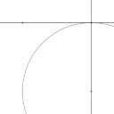
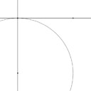
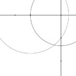
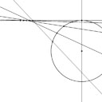
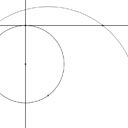
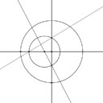
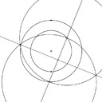
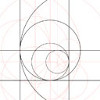
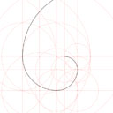
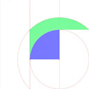

Minimal start: A very short HTML page that uses Proportion.

Adding: using Proportion to make points, lines, and circles.

Intersections: making points by instersecting lines and circles.

Parametric: adding points on lines and circles.

Parmetric spew: using parametric points to make many objects.

Animating: motion from parametric points and a frame counter.

First and Second: mastering the use of intersections.

Midpoint: construction of the point on a line through two points that is equidistant from those points.

Perpendicular: construction of a line that crosses a line at a given point and is perpendicular to the first line.

Standard: adding the "standard figure" to a page.

Subdivisions: cutting a line segment into equal parts.


Groups: organizing marks to use color.

Marks: making line segments and arcs.

Lofting: filling areas betwen arcs and segments.
Lofting: Watch your parameter directions.